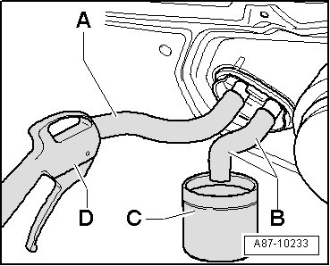
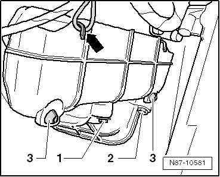
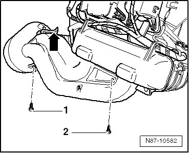
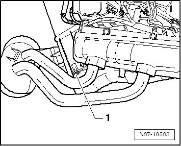
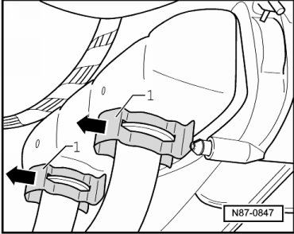
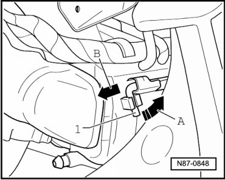
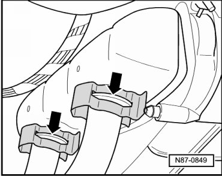

Evaporator Core: Service and Repair
Heat Exchanger
• Before removing, mark the various positioning motors and connecting elements between the door and motor to prevent switching them with connecting elements from other motors.
• If the connecting elements are switched, the positioning motors with the incorrect connecting elements will not reach their specified end position and the malfunction "adaptation limit exceeded" will be displayed in the DTC memory after basic setting.
Before starting repair work, perform the following points:
• Switch off all electrical consumers.
• Switch off ignition.
• Remove ignition key.
Removing
- Remove lower dash panel trim.
- Remove the access/start authorization control module.
- Removing relay carrier and on board supply control unit.
• The refrigerant circuit must be bled after it is opened.
• The refrigerant system is under pressure when the engine is warm. If necessary, release refrigerant system pressure prior to repair work.
- Place drip tray under the engine.
- Discharge coolant circuit.
- Mark the routing of the coolant hoses to the A/C unit.
- Clamp off coolant hoses to heater core of heating & A/C unit using Hose Clamps Up To dia. 25 Mm (3094) and remove them.
- Insert one section each of hose - A - and - B - on to both connections to heater core.

- Hold a container - C - under hose of lower connection - B -.
- Using a compressed air gun - D -, carefully blow coolant out of heater core into container - C - via hose - A -.
- Remove right-hand heat exchanger cover.

- Disengage the wiring harness - arrow -.
- Loosen screw - 1 - and remove screw - 2 -.
- Unclip cover from retainers - 3 -.
- Remove interior carpet from center tunnel in left-hand area.
- Remove left-hand heat exchanger cover.
- Unclip the cover at the strap - arrow -.
- Remove the screws - 1 - and - 2 - and remove the cover.

• The screw - 2 - is covered by the heat exchanger cover.
- Remove footwell vent.
- Cover carpet in area under heat exchanger with waterproof foil and water absorbing paper.
CAUTION!
Contact with hot engine coolant can cause severe scalding.
The cooling system is pressurized and the coolant temperature can be above 100° C with a warm engine.
If necessary, reduce pressure and temperature before repairs.
- Remove bolt - 1 -.

- Remove the clips - 1 - from refrigerant lines.

- Slowly remove refrigerant lines from heat exchanger and allow escaping refrigerant to run into an accumulator reservoir.
• There is a retaining pin on the left side below the heat exchanger. This connects the lower heat exchanger cover with the air conditioner unit.
- Remove retaining pin - 1 - from locking mechanism -arrow A- and then pull retaining pin out in direction of - arrow B -.

- Fold cover down and remove heat exchanger to left.
Installing
Installation is carried out in the reverse order, when doing this note the following:
• Always replace O-rings.
- Secure all the connections with the same type of clamps used in series production.
- After installing retaining clips, make sure they are securely seated - arrows - on heat exchanger.
